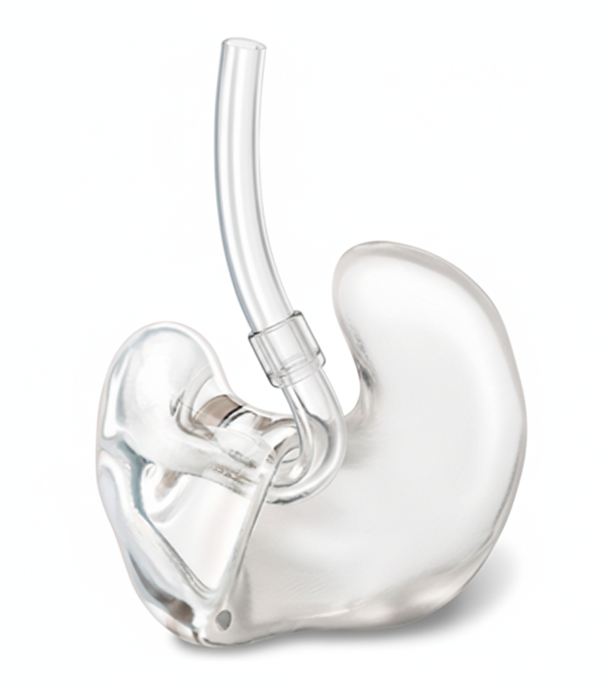
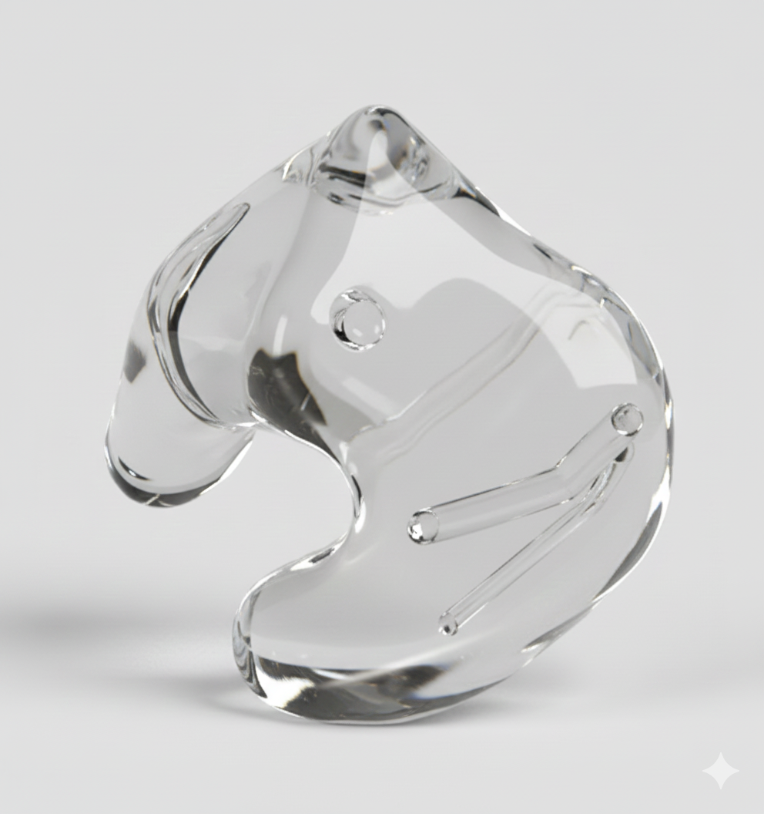

Tipos de Moldes Auditivos
Descubre nuestra variedad de moldes auditivos diseñados para adaptarse a tus necesidades específicas:

Capsula
Molde tradicional diseñado para adaptarse a pérdidas auditivas leves a severas, ofreciendo resistencia, durabilidad y un ajuste cómodo.

Acrilico
Molde que cubre completamente la concha del oído, ideal para audífonos destinados a pérdidas auditivas moderadas a profundas, proporcionando un buen sellado y comodidad.

Blando
Molde pequeño y discreto que se ajusta al canal auditivo, recomendado para pérdidas auditivas leves a moderadas, ofreciendo un ajuste confortable y menos visible.